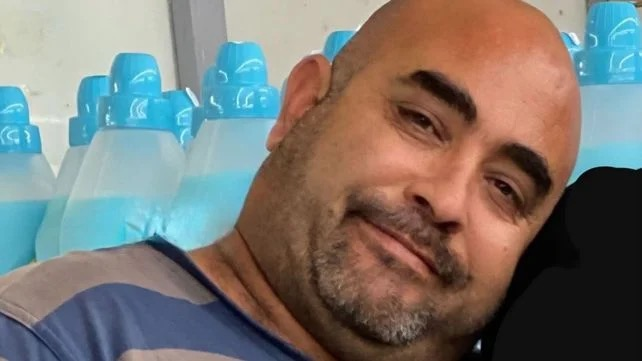
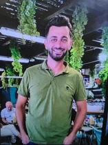
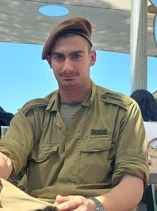
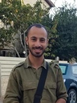

בזמן שברמה המדינית דובר על "רגיעה", 25 משפחות קברו את יקיריהן.
"לא שותפה לתבוסתנות הזאת"
גוטליב · בתגובה לשאלה "בוקר עצוב?" · 1.6.2026 · 104.5FM ↗



קיר הנצחה — 25 הנופלים בתקופת "הפסקת האש" בצפון. תמונות: אתר ההנצחה של צה"ל.
מאז תחילת הפסקת האש (16.4) ביצע חיזבאללה 1,163 גלי תקיפה נגד מדינת ישראל.
עבור יישובי קו העימות הצפוני — "הפסקת האש" מעולם לא התחילה.
בזמן שאתם קוראים את הפסקה הזאת — שכבה שלמה באחד מבתי הספר בקו העימות צריכה להגיע בבטחה למרחב מוגן.
ההסכם מ־26 ביוני חזר והשתיק את האזעקות — בדיוק כפי שקרה ב־16 באפריל. הנתונים מלמדים שדממה על הנייר אינה דממה בשטח: היכולת ההתקפית של חיזבאללה, ובראשה הכטב"מים, נשמרה לאורך כל התקופה. השאלה אינה אם תהיה הסלמה — אלא מתי, וכמה מוכן יהיה הצפון. כדי לבנות מוכנות אמיתית, מדינת ישראל חייבת להפסיק לנהל את האירוע מירושלים ולעבור לעבודה משותפת, בגובה העיניים, עם המנהיגות המקומית שנשארה בחזית.
"הממשלה תתקצב שיקום לצפון בלי ראשי הרשויות, חלק פנו לבג"ץ: 'המדינה יורה לנו בגב'"
ynet ↗12 מיליארד ש"ח לשיקום הצפון אושרו בכנסת — העברתם חייבת להיות ישירה ולא תלויה בצינורות בירוקרטיים שמנתקים בין ההחלטה לשטח.
55% מהמתקפות הן כטב"מים ורחפני נפץ — איום שמערך ההתרעה והיירוט הנוכחי מתקשה לכסות. נדרש תקציב הגנה ייעודי לאיום זה.
הרחבת הטבות המס ליישובים עד 9 ק"מ מהגבול — הכרה במציאות שבה קווי החשיפה האמיתיים רחוקים מהקו הרשמי.